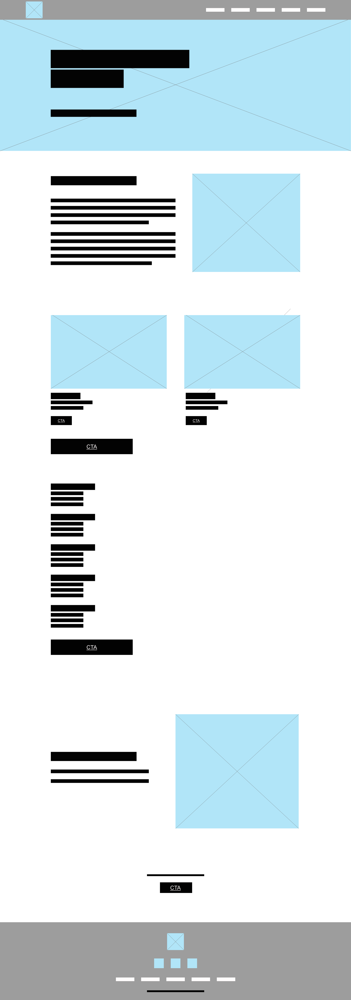

How Do I Design Me?
Clean and Simple
Overview
My portfolio is the online version of me. I wanted to make it simple and clean.
Question
How can I design myself?
Goal
The goal of my portfolio is for users to get to know me a little bit while they explore my skills. I want users viewing my portfolio to know I am organized but creative.
My Part
Understand the users and their values.
Research:This portfolio is mostly going to be viewed by employers. In a portfolio, employers look for an introduction, skills, professional development, and a resume. In a design forward portfolio, employers usually look for creativity, attention to detail, case studies, and problem solving in my work. More specifically in a UX or UI design portfolio, they may look for my personality, my story, original work, and even who inspires me. In a Web Developer's portfolio, employers will be looking for well written code, skills, my work, and of course my contact info. Throughout this portfolio, I have incorporated all of this information. The most important thing for me to do is show my personality. I would really like others to know who I am and why I do things the way I do.
I have redesigned my portfolio twice since starting the web development program in August of 2022. I made it all one page because it felt simple. It was also easier than creating five other pages that would have had minimal content anyway.
Define the problem.
Introducing myself without actaully introducing myself...I want visitors to feel like they are meeting me.
Choosing the aesthetics.
In order for me to make a good first impression, I need to have a nice flowing layout and a simple color palette. The information on the site is more important than the way the site looks, but as a design forward person...looks do matter.
White is associated with innocence, cleanliness, and purity.
Gray is a color of intellect and promise.
Design the product.
The wireframes were created in Adobe XD.
Implement the solution onto a webpage.
-
Evaluate the work and improve it.
I plan on expanding my skills and experience to add to my portfolio. I would like to have buttons on each project/work page that say 'Next Project' instead of making the user start over and/or going back to the main page each time. I want the user to stay on the same page when they submit the Stay In Touch form instead of taking them to a different page. I would like to add motion to the mobile menu when it drops down. I think when the user clicks the back to top arrows, it would be nice to have the site glide the user up to the top.